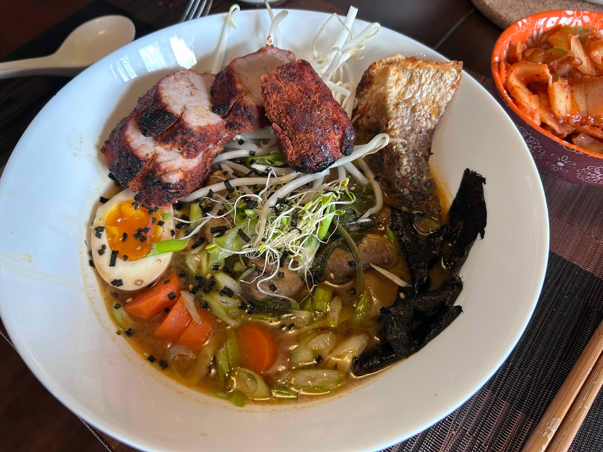

Main
Simple Ramen
My simple tantanmen-style bowl: ginger, garlic, miso, tahini or peanut butter, chilli, greens, mushrooms, and a soft marinated egg.

Ramen base
- Ground meat or tofu
- Mushrooms
- 1 tbsp grated ginger
- 1 tbsp garlic (2–3 cloves)
- 2–3 green onions, mostly white part
- 1 tbsp miso paste
- 1 tbsp tahini or peanut butter
- 1 tbsp soy sauce
- 1 tsp sugar
- 1 tsp white-wine or balsamic vinegar
- 2 tsp chilli oil or gochujang paste
- White pepper, to taste
- Spinach
- Broth
- Ramen noodles
Method
- Fry the ground meat or tofu and remove it from the pan.
- Fry the mushrooms and remove them as well.
- Fry the ginger, garlic, and green-onion whites until fragrant.
- Add the miso, tahini or peanut butter, soy sauce, sugar, vinegar, chilli oil or gochujang, and white pepper.
- Add spinach and return the meat or tofu.
- Add broth and bring the soup together.
- Put cooked noodles in a bowl, add the soup, and dress with egg, nori, mushrooms, sesame seeds, and a little peanut oil if desired. Slices of reverse-seared pork loin make an excellent substantial topping.
Soft marinated ramen eggs
Marinade for about 6 eggs:
- 1/2 cup water
- 1/4 cup soy sauce
- 3/8 cup brown sugar
- Optional: 1/4 cup Shaoxing wine + 1/8 cup sweet soy sauce
- Or: 1/4 cup mirin, reducing the sugar by 1/8 cup
- Prick the eggs.
- Put room-temperature eggs into a large pot of vigorously boiling water without stopping the boil.
- Boil for 6:30–7 minutes and immediately cool in ice water.
- Peel and marinate for about 12–24 hours. A paper towel over the top helps keep the eggs in contact with the marinade.
- Take the eggs out of the marinade.
Notes
This is deliberately simple and flexible rather than doctrinaire ramen. The miso–tahini or miso–peanut base gives the broth body quickly; the soft egg, mushrooms, nori, and greens do the rest. The reverse-seared pork loin is particularly good here: slice it fairly thick and lay it over the bowl just before serving.